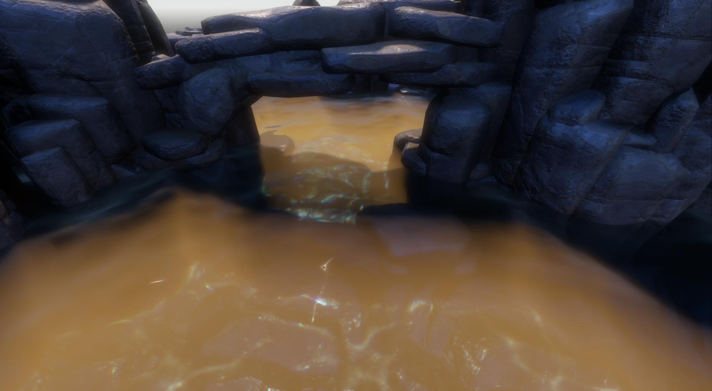
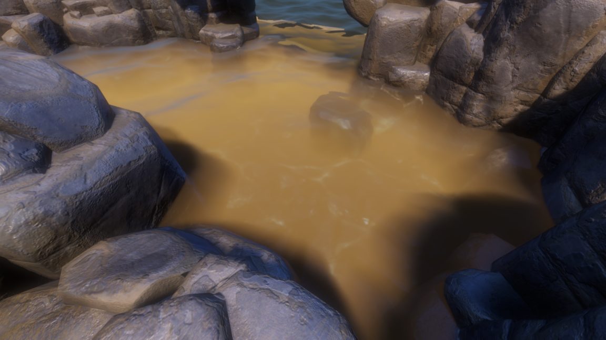
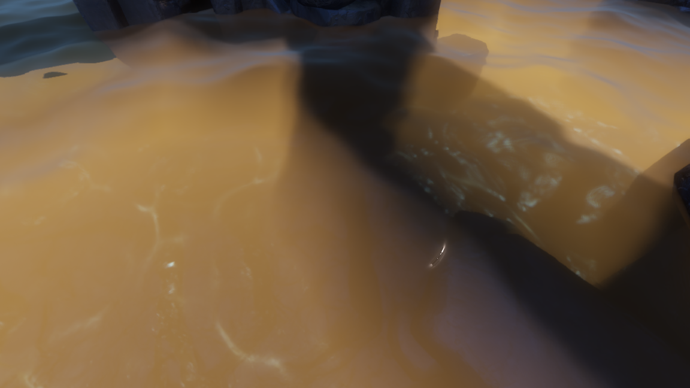
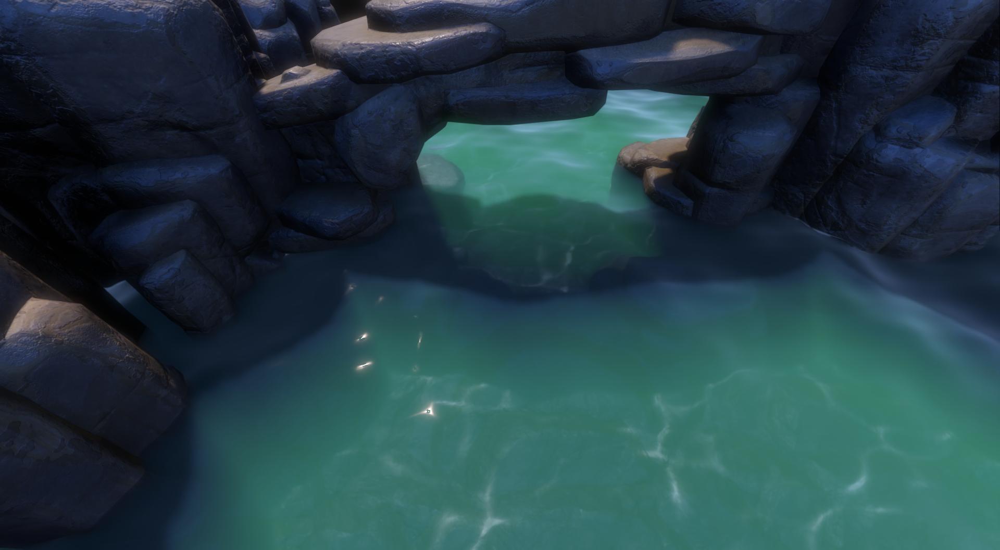
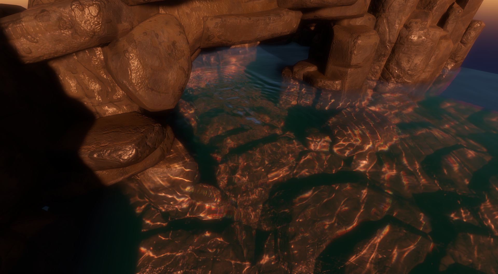
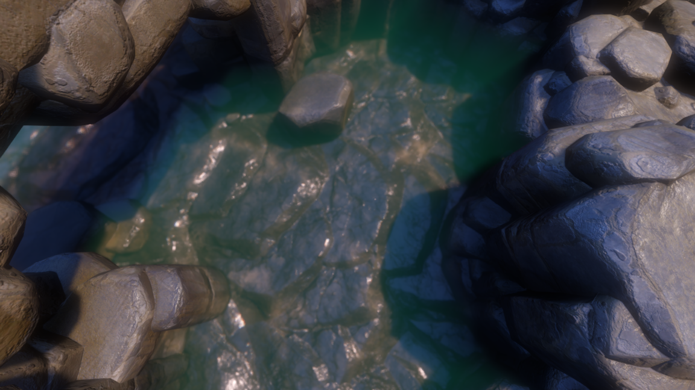
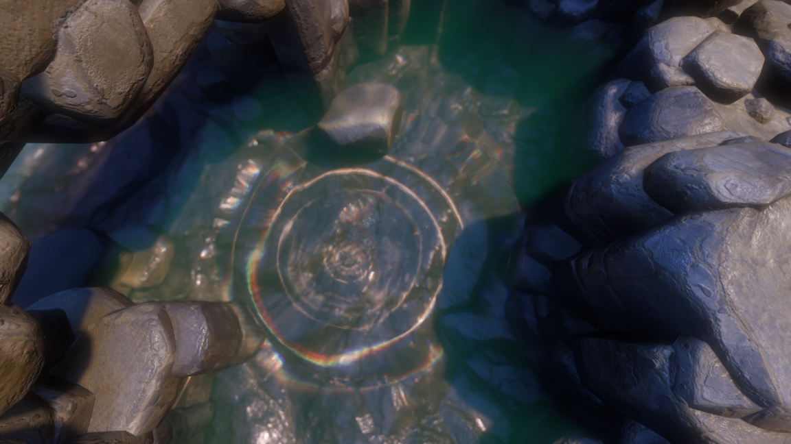
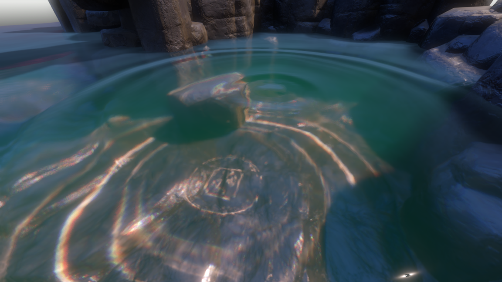

The waterline has given me more trouble than the big waves. From above, the pond can look convincing. Put a cube halfway into it and suddenly there’s a second outline, a gap, or a strip of color that shouldn’t be there. I’ve spent alot of time on those small contacts.
I’m using parts of AshenOneArt's HPWater, alongside my own receiver, contact, and interaction work. The port uses revision 1253e5b10801db791fc0768a95214228870332bd and retains its MPL-2.0 notices. Collision noise is still a problem, so I’m treating that part as an experiment.
How the pond is put together
The visible surface is a horizontal, subdivided PlaneMesh. Its shader reads the main camera's screen color and depth, then writes a complete water color through emission. It does not write ALPHA. That avoids blending another copy of the original opaque image over an already refracted one.
A separate overscan camera renders adapted opaque receivers into a private world. Above-water receiver faces are clipped for that capture, exposing submerged faces that would otherwise be hidden. That capture provides the scene information used by the volume integration; the final refraction and forward blur sample the main camera's screen texture. When geometry goes missing, I need to check which capture that part of the effect actually reads.
An orthographic sun camera captures full occluder geometry. A compute compositor runs the ripple solver separately. water_setup.gd shares the wave parameters and an explicit wave_time among these passes. Authored materials are preserved; transient RenderingServer overrides provide the adapted main-camera receiver shading.
The material adapter handles opaque StandardMaterial3D surfaces and the project's receiver shader. It preserves base textures, UV transforms, roughness, metallic, normal maps, and emission. Arbitrary custom shaders, transparent materials, skeletal deformation, and several advanced material features need additional support.
It helps me to think of the captures as separate views of the same pond. The main camera supplies the image being distorted. The receiver capture gives the volume pass access to submerged faces, and the sun camera answers whether light can reach a point. A plausible final color depends on those views using the same wave parameters and time.
The surface starts with Gerstner waves
Each wave has a wavelength, amplitude, direction, and phase. The later waves get shorter and smaller through spectrum decay. Moving vertices sideways gives the crests their choppy shape. I calculate the tangents from the wave equations themselves, so I don’t need to sample neighboring vertices to find the slope.
// Excerpt from water_waves.gdshaderinc.
float phase = k * dot(d, p) - omega * wave_speed * time + fi * 2.399963;
float s = sin(phase);
float c = cos(phase);
displacement += vec3(q * a * d.x * c, a * s, q * a * d.y * c);
float horizontal = q * k * a * s;
tangent_x += vec3(-horizontal * d.x * d.x,
k * a * d.x * c, -horizontal * d.x * d.y);
tangent_z += vec3(-horizontal * d.x * d.y,
k * a * d.y * c, -horizontal * d.y * d.y);The normal comes from normalize(cross(tangent_z, tangent_x)). Frequency follows a finite-depth gravity/capillary relation: omega² = (g k + 0.000074 k³) tanh(k depth). The constant is the capillary coefficient used by this shader. The configured water_depth affects wave dispersion; it is seperate from the per-pixel optical thickness used for absorption.
Geometry uses the base wave count. Fragments evaluate additional detail waves. Wavelengths smaller than the mesh or pixel footprint fade out through smoothstep. The shader accumulates the lost slope variance and broadens roughness with it, so distant detail becomes a wider highlight instead of persistent shimmer. Finch's GPU Gems chapter is the useful starting point for the wave equations and derivatives.
There are two levels of detail here. The base waves actually move the mesh, so they change its shape and silhouette. The extra fragment waves add finer surface detail. Increasing the detail count can improve the shading, but it won’t give the mesh more vertices or fix a coarse silhouette.
Refraction has to agree with the visible waterline
The refraction code reconstructs the scene point from depth, computes the incident direction from camera to water, and applies Snell's law. It subtracts refraction through a flat normal before adding the original scene direction. This is the HPWater-derived projected approximation: wave normals perturb a baseline path that already points toward the observed scene.
// Condensed from hpwater_refraction.gdshaderinc.
vec3 incident = normalize(water - camera);
float eta = 1.0 / water_ior;
vec3 direction = refract(incident, adjusted_normal, eta);
direction -= refract(incident, vec3(0.0, 1.0, 0.0), eta);
direction += normalize(scene - water);
// Project a bounded point along direction to obtain the candidate UV.The default path projects a candidate directly. An optional exponential, interleaved-gradient-noise-jittered screen-space march is available, with sample-count and distance controls. I leave it off by default. Both paths are limited by what the screen buffers contain: marching farther won’t recover geometry that was never captured.
Before accepting a sample, the shader checks whether it belongs above the water or in front of the surface. It validates the final UV after fades and validates the dispersion channels too. Distortion fades near thin water, screen borders, grazing angles, nearby contacts, and the optical distance limit. A configurable UV offset cap bounds the result.
I tried fading the entire water effect at intersections. The contact ended up looking dry, as though the water stopped just short of the rock. The current version keeps absorption and scattering present, reduces refraction there, and scales surface reflection toward 35% of its usual value. The intersection fade width and strength control that transition independently of foam.
RGB dispersion samples the middle, long, and short offsets with 90/5/5 channel weighting. Small subpixel dispersion skips extra convolutions. This is an artistic RGB approximation; it does not trace a continuous wavelength spectrum.
Reflection uses the same IOR: F0 = ((ior - 1) / (ior + 1))², followed by Schlick's angular approximation. The water combines ambient reflection with Godot's direct-light specular response. SSR and planar reflections are absent from the current pipeline. For background capture and rejection logic, see Generic Refraction Simulation and Looking Through Water.
The cube test is useful because it gives the water a simple, straight edge to meet. If that edge splits into two silhouettes, I can check the refraction offset and contact fade without trying to judge the shape of a complicated rock. I also want to look at the contact from above and near the surface: a fade that hides a problem at one angle can make the water look too thin at another.
Absorption, scattering, and light inside the water
Absorption and scattering are RGB coefficients. Their sum gives extinction, and direct transmission follows Beer-Lambert attenuation. A long underwater path removes more of the background image, channel by channel.
// Surface shader excerpt.
vec3 sig_t = max(max(absorption, vec3(0.0))
+ max(scattering, vec3(0.0)), vec3(0.0001));
vec3 T_direct = exp(-sig_t * t);
The transmission equation gives a useful way to read the settings. If a color channel retains half its light over a particular distance, doubling that distance leaves a quarter. The loss compounds along the path. That’s why changing optical thickness can have such a strong effect even when the surface tint stays the same.
Color pickers make those coefficients easier to edit. Their source_color values are decoded into linear space by the spatial shaders; the compute configuration performs the corresponding conversion. A red absorption control removes red light. It does not simply paint the water red. Shallow and deep color pickers are an additional artistic tint, with a transition depth and blend strength.
The volume compute shader takes six exponentially spaced samples. Each sample combines sunlight, shadow visibility, scattering albedo, phase, and segment transmittance. Volume entry is approximated with the horizontal mean water plane. The displaced surface is used elsewhere, so steep or large waves can expose that mismatch.
// HPWater-derived integration excerpt, water_scatter.glsl.
vec3 albedo = scattering / extinction;
vec3 step_transmission = exp(-extinction * cross_distance);
vec3 base_scatter = light * shadow
* (vec3(1.0) - step_transmission) * albedo;
vec3 effective_phase = mix(scatter_phase, vec3(1.0),
smoothstep(0.0, 0.5, luminance(albedo)));
radiance += base_scatter * effective_phase;
transmission *= step_transmission;The phase function describes how the scattered light changes with viewing direction. This version mixes Rayleigh and Mie-like angular terms. phase_g controls forward preference. The multiple-scattering approximation blends toward an isotropic phase as albedo grows, and adds scene-driven in-scattering. It does not explicitly integrate successive scattering orders. For the details of this approximation, I go back to HPWater’s source; PBRT's volume chapter explains the underlying quantities.
A separate sun depth capture supplies visibility inside the volume. The integration includes a Beer-limited shadow sampling distance and a 30% unshadowed blend in the scene in-scattering term. Surface emission is explicitly modulated by sun visibility, because writing the water through emission bypasses ordinary diffuse shadow reception. Crest subsurface scattering adds a view- and normal-dependent glow, also multiplied by surface visibility.
Surface shadow filtering interpolates comparison results between neighboring texels, then averages a 3×3 PCF neighborhood. The compute volume path still uses its own nearest-comparison 3×3 PCF. The surface and volume therefore have slightly different shadow filtering. Shadow Map Antialiasing explains why filtering visibility works better than blindly filtering depth.


In the turquoise screenshot, the arch’s shadow covers a broad area of the water, while pale underwater patterns remain visible nearby. Small bright highlights sit on the surface. Those are separate contributions to the image, so I’d inspect volume lighting, caustics, and reflection independently when tuning this view.
Why I keep blur and denoising separate
Forward scattering blur is applied to the transmitted scene image. Its radius grows with underwater optical distance and scattering density. The current implementation explicitly convolves nine screen-color taps and rejects invalid underwater samples; it does not depend on the renderer building a usable color mip pyramid. I’ve set the scene’s blur density to 0.15 and capped the radius at six pixels. Larger values made the underwater details look like a low-resolution image.
À-trous filtering acts on integrated volume radiance and transmission. Up to three passes use strides 1, 2, and 4, with depth, shallow-water, and distance weights. The 3×3 kernel and conditional weights come from the HPWater port. This is a spatial filter with no motion-vector reprojection or temporal accumulation. Dammertz et al. describe the underlying edge-avoiding filter family.
The final surface reconstructs the volume fields with a depth-aware 2×2 interpolation to reduce texel snapping. It preserves sky/non-sky distinctions and downweights depth differences. That interpolation is separate from the transmitted-image blur.
Missing reversed-Z depth needs a finite fallback. Far samples blend into analytic absorption and ambient scattering rather than taking the capture's zero-volume, clear-transmission result. Refraction fades out as distance approaches max_water_distance. The fade starts at 75% of that limit. Projection division is guarded too.
For tuning, I’d check transmission with forward blur disabled first. That makes it easier to judge the visibility of submerged geometry. Then I’d bring the blur back in and look at the fine rock detail. The volume filter has its own job: smoothing the integrated light and transmission fields without spreading them across unrelated depths.
Putting caustics on the rocks
For caustics, I’m using the project’s restored receiver-plane solver. At an underwater receiver point, the shader estimates where refracted sunlight crossed the wave surface. It performs three local inverse-mapping steps, then samples the surface at that point and at two nearby offsets.
Each sample refracts sunlight and intersects the receiving tangent plane. The area spanned by those three hits measures how the wave surface concentrates light. The normalization uses a flat-water projection onto the same receiver plane, which is why sloped and vertical surfaces can be handled without projecting everything onto XZ.
// Excerpt from focus() in water_receiver.gdshader.
float area = abs(dot(cross(hx - h0, hz - h0), plane_normal))
/ (epsilon * epsilon);
float flat_area = abs(dot(cross(fx - f0, fz - f0), plane_normal))
/ (epsilon * epsilon);
return clamp(flat_area / max(area, caustic_softness * flat_area),
0.0, 8.0);Pixel footprint and a minimum epsilon regularize the estimate. Strength, water coverage, maximum depth, solar absorption, and receiver-facing checks limit the contribution. Three IOR values give RGB spectral focusing. Ripple normals also affect the surface samples, so an interaction can disturb the caustic pattern without displacing the mesh.
Caustics enter the receiver's direct lighting and use Godot's light attenuation, so shadowed receivers do not emit caustic light through their own material. Main-camera and private-capture receiver materials receive the same shared wave parameters.
Evan Wallace's caustics article explains area-contraction focusing clearly. The inverse receiver mapping here differs from his implementation. HPWater's photon caustics have not been ported.

The area ratio in the focusing code is easier to picture than the full shader. When the refracted rays land closer together, the receiving area gets smaller and the light becomes more concentrated. The softness term limits that concentration, and the clamp caps the result at eight. Those limits keep a tiny estimated area from producing an arbitrarily bright patch.
Foam and wet rocks
Crest foam uses the horizontal wave Jacobian. Compression below a threshold raises a foam mask. Intersection foam uses an independent field produced by slicing mesh triangles at eight heights across the wave band.
For each slice, triangle-plane intersection segments are rasterized into an XZ occupancy image. The CPU caches those masks until geometry, visibility, transform, or domain changes. The GPU evaluates local displaced Gerstner height, interpolates adjacent slices, and softens occupancy across neighboring cells. A local search produces world-space distance to the solid boundary.
// Surface foam excerpt.
intersection_foam = 1.0 - smoothstep(
0.0, max(shore_foam_width, 0.001), boundary_distance);
foam = max(foam,
intersection_foam * foam_amount * intersection_foam_strength);Foam has independent crest and intersection strengths, threshold softness, color, and roughness. It no longer multiplies its intersection mask by a screen-depth contact term. Distance is still a grid approximation with a bounded search radius. Closed, undeformed meshes are the supported case; open meshes and animated skinning can give unreliable slices.
Wetness is evaluated in the receiver shader. Three inverse horizontal-displacement iterations find the wave surface above the rock's world XZ position. The difference between rock height and that water height becomes a smooth wetness mask, restricted to the water plane's bounds.
// Receiver wetness excerpt.
float wet = wetness_amount * wet_coverage
* (1.0 - smoothstep(-wetness_band, wetness_band,
world_position.y - local_water_height));
ALBEDO *= 1.0 - wet * wetness_darkening;
ROUGHNESS = mix(ROUGHNESS, min(ROUGHNESS, wetness_roughness), wet);The rocks darken and their roughness falls as waves reach them. There is no retained wetness history, drying timer, or simulated water film. Lagarde's wet-surface theory and practical follow-up cover richer models.
The wetness mask follows the wave height right now. A rock can darken when the water reaches it, but the shader doesn’t remember that contact after the water moves away. A lingering wet band would need history and a drying rule, which this version doesn’t have.
Adding ripples and mouse wakes


The interactive field now runs on a 256×256 grid with fixed 120 Hz steps and up to eight catch-up steps per frame. It uses three height textures for previous, current, and next state. A nine-point Laplacian reduces the square or diamond bias of a cardinal-only stencil.
// Solver excerpt, water_ripple.glsl.
float laplacian = (2.0/3.0) * (neighbors - 4.0*current)
+ (1.0/6.0) * (diagonal_neighbors - 4.0*current);
float velocity_decay = exp(-config.mask_settings.z/120.0)
* (1.0-config.dynamics.y);
float next = current + (current-previous)*velocity_decay
* absorption*wall_loss
+ config.dynamics.x*config.dynamics.x
/ (120.0*120.0)*laplacian;I apply decay to velocity. Earlier, shrinking displacement at every step changed the wave motion and made the response look wrong. A sponge at the domain borders absorbs outgoing energy. Adjustable wall damping is expressed per second rather than repeatedly multiplying velocity by the reflection setting.
A click injects an annular pulse with a cosine crest/trough profile and smooth compact support. Ring width and radius are configurable. Up to eight impulses can be queued per simulation update. A drag uses a compact Gaussian-like bipolar disturbance instead, sampled along the world-space cursor path. Height scales with distance traveled per source so slow motion produces smaller injections.
The drag path has adjustable wake height, width, and spacing. Releasing the mouse or leaving the water resets tracking. The initial click emits a ring; pausing during an active hold no longer emits extra timed rings. Input currently runs outside the editor and uses a ray intersection with the mean water plane.
Collision reflection uses fractional occupancy and shared-face weights. Incoming heights and occupancy interpolate across catch-up substeps, avoiding an immediate jump to each rendered frame's boundary state. Incoming wave slope drives a corrective ripple field. Automatic pulses based merely on changes in occupancy were removed: a stationary rock's mask can change as waves pass it, and those changes were being mistaken for impacts.
The collision response is the part I’m least happy with. The noise has survived several changes. The Gerstner geometry continues along its prescribed paths; the corrective field changes surface normals and caustics. It does not redirect the underlying displaced mesh. Proper reflection and diffraction need a consistent boundary treatment and a verified numerical response. Langtangen's finite-difference notes are especially helpful for the timestep, damping, Neumann boundaries, and stability analysis.

Ripple normals use Catmull-Rom reconstruction with analytic derivatives across a 4×4 neighborhood. This makes gradients continuous across texel boundaries. It cannot recover detail missing from the grid, which is why the grid was increased from 128 to 256. An edge fade reduces artifacts at the field boundary. Fast Third-Order Texture Filtering explains cubic reconstruction and derivatives, though its optimized filtering scheme differs from this direct Catmull-Rom implementation.
The fixed simulation step and rendered frame are separate. At 120 Hz, each wave update represents about 8.3 milliseconds. Catch-up steps let the solver advance more than once during a rendered frame, up to the configured limit of eight. Interpolating the boundary state across those steps avoids presenting every substep with a sudden new collision mask.
The ripple screenshots show the surface and caustics reacting to the ring. They don’t establish that the collision solver reflects waves correctly. The displaced Gerstner mesh still follows its prescribed motion, while the corrective ripple field changes the normals and caustics. I need to keep that limitation in mind when judging a convincing-looking still image.
What I adjust in the scene
| Group | Controls and purpose |
|---|---|
| Waves | Base/detail counts, wind angle/spread, wavelength/amplitude decay, choppiness, speed, gravity, configured depth, mesh footprint. |
| Optics | IOR, refraction strength, surface fade, UV offset limit, optional marching, march samples/distance, dispersion, blur density and pixel limit. |
| Volume | Shallow/deep colors, transition depth, color strength; absorption/scattering color pickers; phase anisotropy and scattering intensity. |
| Filtering | Zero to three à-trous passes and depth sensitivity. Forward blur has its own toggle. |
| Lighting | Sun and ambient inputs, crest scattering color/strength, and artistic surface-shadow strength. |
| Caustics | Receiver root, strength, maximum depth and debug mode; receiver shader adds dispersion and focusing softness. |
| Foam/contact | Foam color/amount, crest/intersection strength, compression threshold, softness, roughness, shoreline width, and independent contact fade. |
| Interaction | Ripple speed, damping, height limit, normal strength, ring radius/width; mouse wakes, wake height/width/spacing; collision strength and wall reflection/damping. |
| Wetness | Amount, darkening, target roughness and waterline transition band. |
| Capture | Refraction overscan, optional camera-follow and snap size. Larger captures cost more. |
There are debug views for normals, refraction offset, optical distance, blurred and sharp scene color, multiple scattering, filtered volume, transmission, blur difference, intersection foam, ripple height, and filter difference. When something looks wrong, I check the affected term on its own before changing the final color. I definately find it easier to spot the problem that way. During the collision work, it was too easy to adjust the appearance while the underlying response was still wrong.
A tuning order I’d use
I’d start with the base wave shape and speed, then check refraction on a simple object crossing the water. Once that contact is readable, I’d adjust absorption and scattering while watching how much submerged detail remains visible. Caustic strength and foam come afterward, so they don’t cover up a contact problem.
For interaction, I’d use a single click in open water before testing a drag or a rock boundary. That separates the injected pulse from the collision response. The ripple-height and normal debug views should make it easier to tell whether an odd ring comes from the wave field or from its shading.
Following the implementation
To recreate this setup, I’d follow the pass order and coordinate spaces as closely as the equations. Sampler choices, texture formats, and shared parameters are part of the implementation too. Ripple height histories are R32 float; published ripple metadata is RGBA16 float. The packed GPU parameter layout must match the GDScript buffer, and the push constants carry the stage, substep, and step count. A mismatch can break the entire effect.
Start with water_waves.gdshaderinc, then follow water_setup.gd through receiver capture, sun capture, and compositor setup. hpwater_refraction.gdshaderinc owns the screen-space optics. water_scatter.glsl integrates and filters the volume. Receiver focusing and wetness live in water_receiver.gdshader; mesh slicing is in water_intersections.gd. Mouse sources enter through water_setup.gd, are queued by water_ripple_effect.gd, and evolve in water_ripple.glsl.
The extra captures, volume filtering, and 256-square ripple solver all add work. Cubic gradients read sixteen height texels, and caustic focusing repeats surface samples. I don’t have benchmark numbers for these changes yet. There’s still a few things I want to measure. The implementation assumes a camera above horizontal water and a compatible RenderingDevice path; it does not provide a full underwater-camera mode.
The custom mesh slicing, contact composition, receiver inversion, and mouse wake coupling are documented by the project's source. None of the articles below reproduce the whole shader unchanged. I’d revisit collision response first, using a simple wall scene where I can watch the reflected wave without the rest of the pond getting in the way.
References and source credits
- AshenOneArt: HPWater. Direct source for the adapted refraction, volumetrics, spatial filtering, and wave-equation/fluid-normal code. Revision
1253e5b10801db791fc0768a95214228870332bd, MPL-2.0. The port and subsequent changes are recorded inthird_party/hpwater/NOTICE.txt. - Mark Finch: Effective Water Simulation from Physical Models. GPU Gems, chapter 1. Gerstner waves and surface derivatives.
- Generic Refraction Simulation. GPU Gems 2, chapter 19. Scene capture and refractive sampling.
- Catlike Coding: Looking Through Water. Practical depth-based underwater composition and refraction.
- Pharr, Jakob, and Humphreys: Volume Scattering. Physically Based Rendering, fourth edition. Physical quantities behind absorption and scattering.
- Sébastien Hillaire: Physically-Based and Unified Volumetric Rendering in Frostbite. SIGGRAPH 2015 presentation linked from the author's publications page. Background on shadowed volume integration; not a direct port here.
- Dammertz, Sewtz, Hanika, and Lensch: Edge-Avoiding À-Trous Wavelet Transform for Fast Global Illumination Filtering. HPG 2010. Filtering family behind the adapted spatial denoiser.
- Hans Petter Langtangen: Finite Difference Methods for Wave Motion. Numerical wave equations, damping, boundary conditions, and stability.
- Evan Wallace: WebGL Water and Rendering Realtime Caustics in WebGL. Interactive height fields and area-based focusing; related approaches, not exact copies of our receiver solver.
- Fast Third-Order Texture Filtering. GPU Gems 2, chapter 20. Reconstruction and continuous derivatives.
- Shadow Map Antialiasing. GPU Gems, chapter 11. Filtering shadow comparisons.
- Sébastien Lagarde: Water Drop 3a and Water Drop 3b. Wet-surface theory and practical shading.